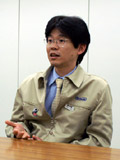

山上：開発がスタートしたのは2004年の2月頃になります。かねてから社内の上層部では「わかりやすくてシンプルに楽しめるゲームをニンテンドーDSで出せないだろうか？」ということが言われていたようです。その中で「『テトリス』ではどうか？」という意見が挙がり、「それでいこう！」と二つ返事で決まったようです。始めにテトリス制作の話が来たときは冗談かと思いましたが、何度か同じ打診があり、「あっ、本気なんだ。」と･･･（笑）。それなら企画を始めてみようということになりました。
俵：『テトリス』に関しては何回かそういう話が出ていましたよね。でも、あえて出すタイミングを探っていたというのもあって。
山上：つまりポジションとしてはニンテンドーDSというハードウェアの普及目的も兼ねたソフトになるかと思います。かつてゲームボーイ版の『テトリス』が、発売して間もないゲームボーイの販売台数を引っ張ったように、手軽に遊べるゲームというのはハードウェアと一緒に購入していただける率が高い。いわば長年ハードウェアとソフトウェアを作ってきた経験から自然に生まれた話ともいえますね。 |